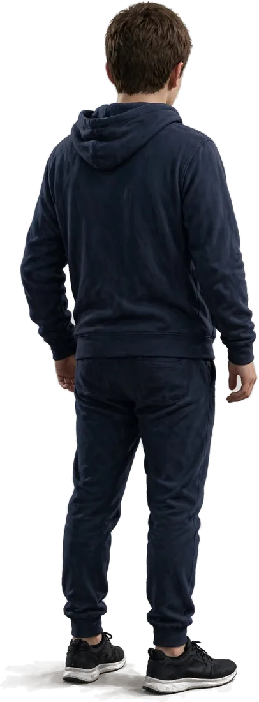

La Joute Philosophique
Quinze gardiens, un par grande notion, défendent leurs thèses. Pour les vaincre, choisis le bon argument : celui qui soutient, celui qui réfute, ou l’exemple qui prouve.
Règles du jeu
- Chaque gardien énonce des thèses. Lis bien ta mission : soutenir la thèse, la réfuter, ou trouver l’exemple qui l’illustre.
- Un bon argument fait perdre des points de vie au gardien. Un mauvais te coûte un cœur ❤️ : au troisième, tu es K.O.
- Chaque mauvais argument est un piège classique (argument d’autorité, hors sujet, contresens…) : son nom s’affiche pour que tu apprennes à le reconnaître.
- Mode difficile : parmi les quatre réponses, deux sont justes, mais une seule est la meilleure. Choisir la réponse faible ne coûte pas de cœur, mais le gardien pare le coup. Bats tous les gardiens en mode difficile pour gagner la vignette « Maître de la joute ».
- Chaque piège rencontré entre dans ton bestiaire des sophismes, dans l’Agora des vignettes.
- Pour finir, remets dans l’ordre thèse, argument, objection et réponse, comme dans une dissertation.
- Trois bons arguments d’affilée : coup critique ! Il fait double dégât et te rapporte une potion d’ataraxie (+1 cœur).
- Jokers : Socrate peut écarter une mauvaise réponse (une fois par duel), et tu peux relire la fiche du cours.
- Bats tous les gardiens pour gagner la vignette « Champion de l’argumentation », puis affronte le boss final, Socrate, dans une dissertation complète : trois sujets au choix (devoir et bonheur, liberté, vérité).
Choisis ton adversaire
Les gardiens
Duels de rivaux Incarne un philosophe face à son grand adversaire
📕 Mon bestiaire des sophismes : tous les pièges que tu as rencontrés.
Tu changes d’appareil ? Transfère ta progression avec un code.

PV
TOIN.17